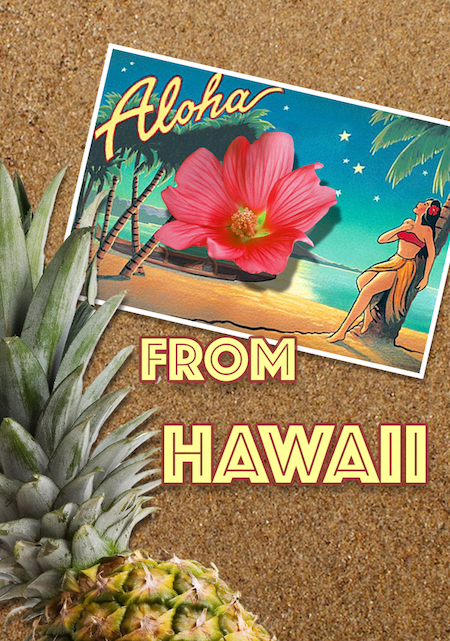
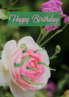
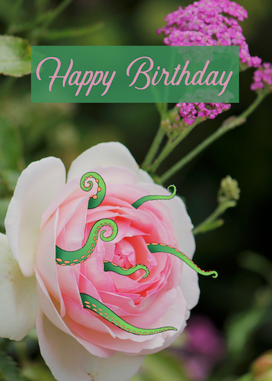
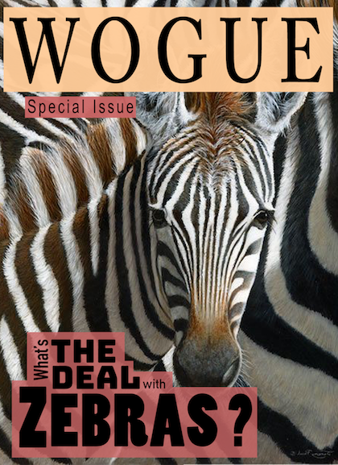

This image was made in processing. The "vines" will travel randomly if left untouched, but direction and size can be changed manually to make more interesting compositions.

A postcard made by compositing several images and text.


The card is made by compositing illustrations with a photograph to create a more interesting image.

A mockup magazine cover taking design inspiration from National Geographic.
A mockup of a design for a videogame cover.